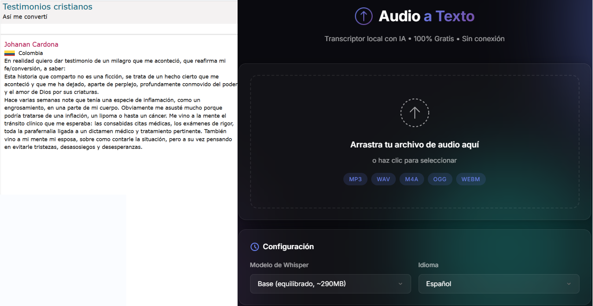
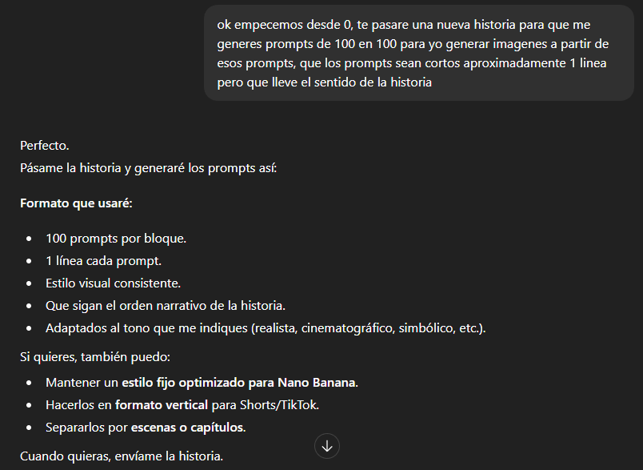
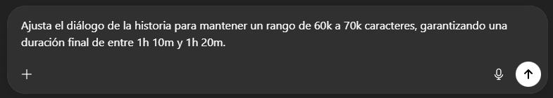
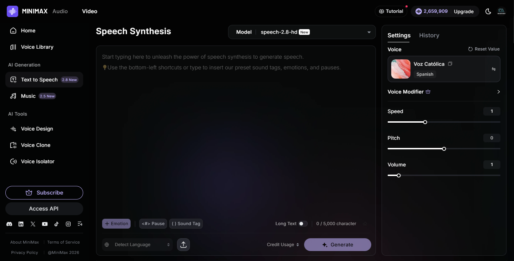
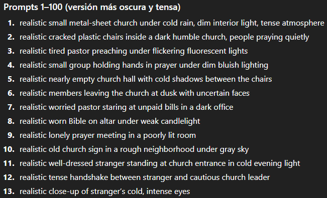
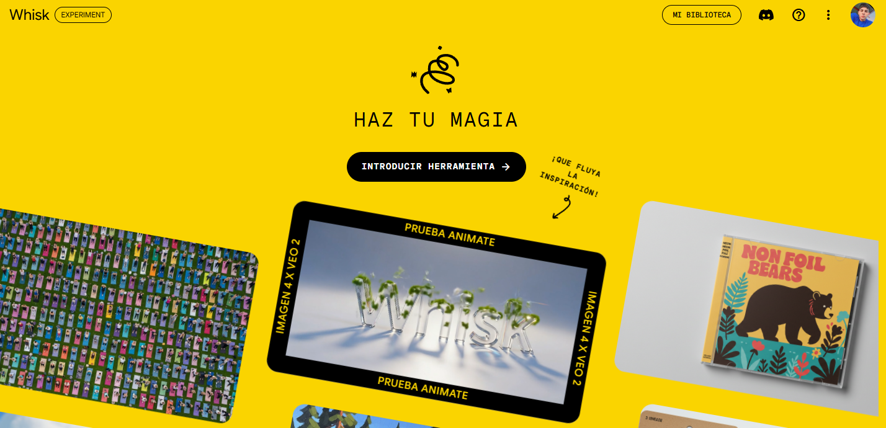
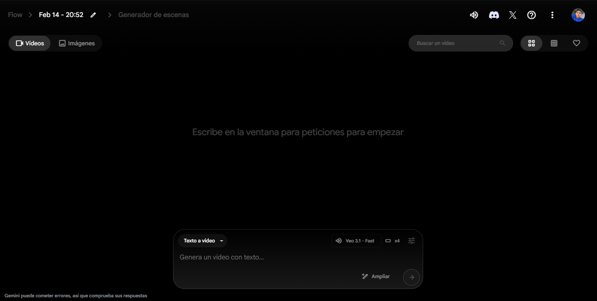
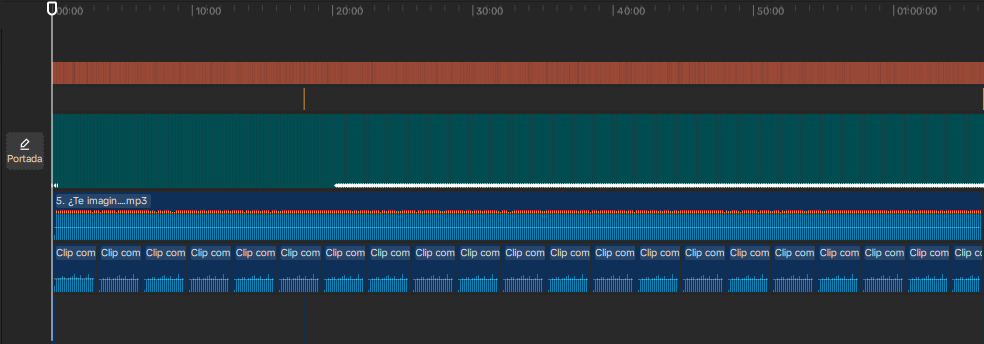
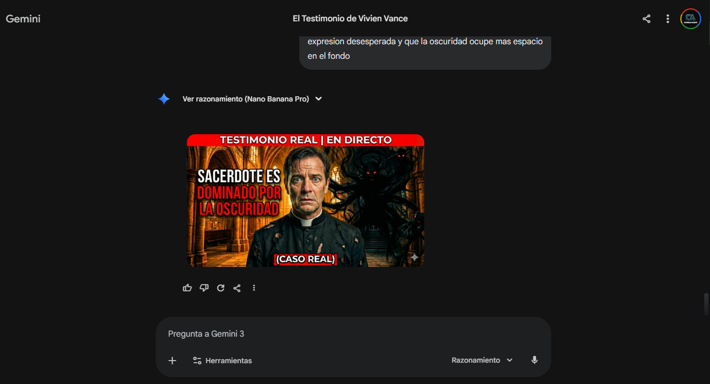
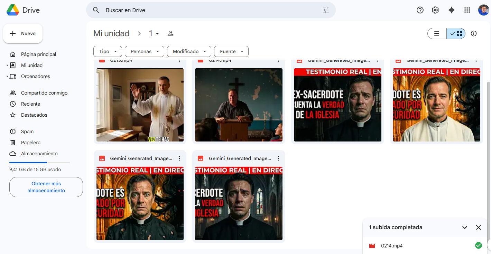

01
Curaduría Real
Busco historias y testimonios reales en Google, Reddit y YouTube. Si el testimonio es de video, descargo el audio y uso mi
herramienta personalizada de transcripción para convertirlo en texto
editable.

02
Reescritura Estratégica
Cuando no hay una historia exacta, utilizo ChatGPT para generar un
relato similar de entre 60,000 y 70,000 caracteres. Me aseguro de
cambiar nombres, fechas y lugares para crear un contenido original y seguro.

03
Control de Duración
Ajusto el volumen del texto para que se mantenga entre los 60,000-70,000
caracteres. Esto garantiza que el video final tenga una duración premium de entre 1h 10m y 1h 20m.

04
Narración con Alma
Convierto el guion final a voz utilizando Minimax. Utilizo
tecnología de clonación de voz para que el relato se sienta humano,
cercano y profesional.

05
Storyboarding de Prompts
Le pido a ChatGPT prompts realistas de 1 sola línea, 100%
congruentes con la historia. Genero bloques de 200 prompts a la vez
(equivalente a 20 minutos de video) para mantener la fluidez visual.

06
Arte Visual Masivo
Utilizo Whisk para procesar cada prompt. Genero entre 700 y 800 imágenes cinematográficas de alta calidad que cubren la
historia completa sin fisuras.

07
Cinemáticas con Flow
Transformo las imágenes en clips animados usando Flow (Veo 3). Cada
bloque de 200 clips se convierte en un segmento de 20 minutos de pura inmersión visual.

08
Montaje y Pulido
Llevo todo a CapCut Desktop. Aquí agrego hooks enganchantes al inicio, música de iglesia sin copyright, efectos
de sonido (SFX), transiciones y subtítulos dinámicos.

09
Optimización CTR
Con Gemini PRO genero 2 miniaturas A/B de nivel profesional. Además,
pido a la IA 5 títulos virales y una descripción enriquecida con
palabras clave para posicionamiento SEO.

10
Entrega Final
Subo el material final a Google Drive para que el cliente lo
descargue. Envío de inmediato los títulos y la estrategia de descripción por WhatsApp.
